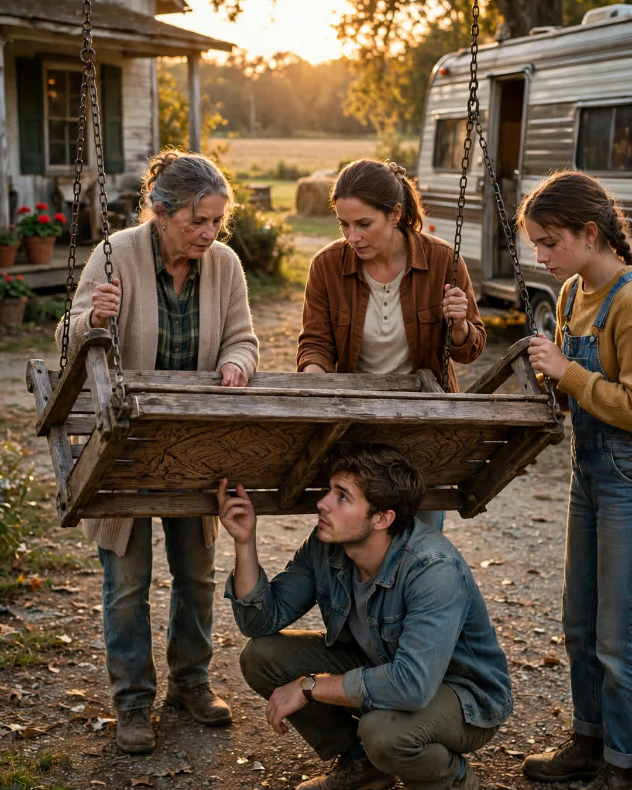

The Porch Swing
A Clipp Kaili original story

The porch swing had held my grandparents for fifty years, and when we moved it to my first house, we found the words my grandfather carved underneath it.
Grandpa Walter built that swing the summer after he and Grandma June married — wide pine boards, chains that sang a little when the wind was right, set on the porch of the farmhouse where they would live their whole lives. There was not an important hour of their marriage that didn't happen in reach of that swing. Morning coffee. Shelling peas. The evening he told her his heart was "acting up," and the better evening, years later, when he told her the doctor said he'd fooled them all again. The night they waited up until 3 a.m. for my teenage mother to come home, and the morning they rocked my newborn self on it because I would not sleep anywhere else in the world.
Fifty years of weather and weight wore those boards smooth as church pews. You could run your hand along the middle slat and feel exactly where two people had sat, side by side, ten thousand evenings in a row.
When the farmhouse sold this spring — Grandma gone two years, Grandpa four — the family divided things with the usual tenderness and the usual arguments. Nobody argued about the swing. It was mine, they all said. I was the one who'd been rocked to sleep on it. I was the one closing on a first house — a little place across town with a porch exactly one swing wide, which my mother called a coincidence and my aunt called Grandma's planning.
Four of us carried it down the farmhouse steps. It was heavier than anyone expected — old pine and iron chain and fifty years will do that. We set it on my brother's trailer, and that's when my cousin, crouching to strap it down, said, "Hey. There's writing under here."
We all got down in the gravel driveway like kids.
Under the seat, where no one would ever see it unless the swing was lifted — where no one had seen it for fifty years — Grandpa had carved a line of letters into the wood, deep and patient, with the year beneath: 1973, the summer he built it. The summer he was twenty-four, and she was twenty-two, and the whole thing was still a bet.
The carving said:
"SIT HERE LONG. LOVE HER LONGER."
We were all quiet a minute in that driveway. Fifty years, and he had kept his wedding vow hidden under the seat like a foundation — a marriage plan carved where only the weight of the two of them, sitting together, could ever press down on it. Grandma sat over those words for five decades of coffee and peas and hard news and good news and never knew. Or — and this is what my mother believes — she knew the whole time, and the not-saying was their last private joke on the rest of us.
I didn't sand it. I didn't stain over it. We hung that swing on my porch last Saturday, chains singing a little when the wind was right, and my wife brought out two coffees and sat down beside me in the exact smoothed-out place where two people had worn the wood down to a promise.
We sat a long time. We're learning how.
A swing is just boards and chain.
Unless a man carves the instructions underneath — and two people spend fifty years following them.
This story is a work of fiction, written to touch hearts and bring families closer.
← Back to all stories